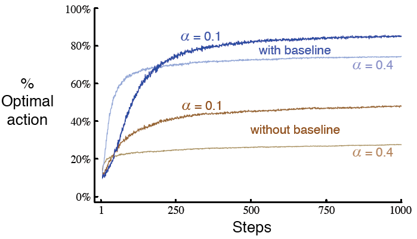

2.8 梯度赌博机算法
在本章的之前部分, 我们已经学习了对动作值进行估计, 然后使用估计值来选择动作的多种方法. 这常常是一种好的途径, 但并不是唯一的途径. 在本节中, 我们将考虑如何为每一个动作学得各自实数型的偏好<preference>, 我们将其记为. 偏好值越高, 那么对应的动作越常被采用, 但是偏好不能使用奖赏的观念来理解. 只有一个动作相对于另一个动作的偏好值是有意义的; 如果我们将所有动作的偏好值加上1000, 各个动作被选择的概率仍然保持不变, 其中概率是由如下的soft-max分布(也称为Gibbs分布或Boltzmann分布)决定的: 其中我们引入一种实用的新标记, 来表示在时间采取动作的可能性. 起始时, 所有动作的偏好值都是相等的(即对所有的a来说, ), 因此所有动作都有相同的被选择的概率.
练习 2.9 证明在只有两个动作的情况下, soft-max分布, 和统计学及人工神经网络中常用的logistic或sigmoid函数给出的分布是等价的.
基于随机梯度上升<stochastic gradient ascent>, 可以自然地得到这一设定下的学习算法. 在每一步时, 在选择动作并收到奖赏后, 动作偏好值使用下式进行更新: 其中, 为步长参数, 且, 为时间及之前所有奖赏的平均, 可以如第2.4节(如果问题是非固定性的话, 那么如第2.5节)中所述的那样进行增量式的计算. 这一项的是作为奖赏进行比较的基准线的. 如果奖赏高于基准线, 那么将来采取动作的概率将增加; 反之如果奖赏低于基准线, 那么概率将减小. 而未被选择的动作朝相反方向移动.
图2.5展示了梯度赌博机算法在10-摇臂测试工具的变体上的结果, 该变体中真实的期望奖赏是从一均值为+4而非0(方差和从前一样为1)的正态分布中采样获得的. 所有奖赏的同时增加对梯度赌博机算法绝对没有影响, 因为奖赏的基准线会立即适应到新的水平上. 但如果基准线被省略了(即如果(2.12)中的恒取0), 那么其性能将如图中所示的急剧退化.

图2.5 在接近+4而非0的10-摇臂测试工具上, 有或者没有奖赏基准线的梯度赌博机算法的平均表现
作为随机梯度上升的梯度赌博机算法
我们可以将梯度赌博机算法理解为梯度上升的随机近似, 来获得更深入的理解. 在典型的梯度上升中, 各个动作的偏好值将会正比于增量在表现上的效果而增加: 其中表现的度量即为期望的奖赏: 且增量的效果的度量为: 表现的度量相对于动作偏好值的偏导数. 当然, 因为假设上我们不知道, 所以不可能在现有情况下实现典型的梯度上升, 但事实上算法(2.12)的